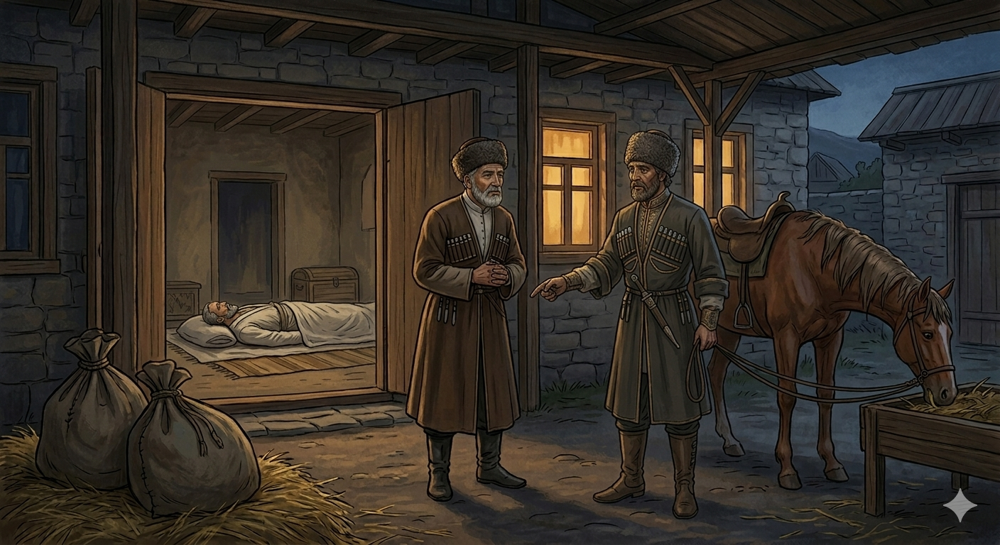

И.А. Дахкильгов. Хьехаме дувцарш - поучительные рассказы-притчи.
И.А. Дахкильгов. Хьехаме дувцарш - поучительные рассказы-притчи. Из ингушского фольклора.

Дийнабараш баха а сакъерада а безаш ба
Боад берзаш цхьан юрта вена хьаэттав цхьа къонах. Ше гӀаш а волаш, йоа лаьца говра а йоалаеш, говра букъа тӀа доккха ши талс уллаш хиннад. Цхьан коа чу кхайкав из, хьаьша тӀаэце оаш, аьнна. Эц, мишта эцац, оалаш, коа ваьккхав. Талсаш говра тӀара Ӏодаха белча, къонахчо, ше Ӏодоах уж, аьннад. ДӀа а дихьа, уйча дехьа саьнга дӀаоттадаьд цо. Фусам-даьша говрана фуъ биллаб, къонах хьаьшацӀа вига, кулг-юхь дилийтад. Пхьор хьадаллалца, хьаьший саготлургдоацаш, цунна тоам бола къамаьл деш хиннав фусамда. Кастта шу оттадаьд. ХӀама дуаш багӀаш, хьаьшас аьннад: - Сох визза хьаьша хетац шоана. Вай гӀалгӀай ӀаьдалагӀа доагӀача тайпара хӀана дац оаш хьоашалгӀа? Пандар мичаб, мехкарийи кагий нахи мичаб, ловзар хӀана оттадац? - Цкъа вай шунах мотт теха даьлча, цох дола хабар дувцаргда вай, - аьннад фусамдас. Шу диа баьнначул тӀехьагӀа, фусамдас аьннад: - Дехьарча цӀагӀа хьажийтал вай. Мегад, аьнна, дӀадехьачу баьннаб. Цигача дӀадолла аьнна, кийчадаь уллаш дакъа хиннад. Аьннад фусамдас: - Тахан кхелха са да ва ер, тахан дӀаволла ца кхоадеш, кхоана дӀаволла аьнна кийчваь уллаш ва. - ХӀанз хьо вел соца, - дӀавийхав хьаьшас. Уйче ше дӀаоттадаьча шин доккхача талса тӀавигав цо фусамда. ТӀаккха аьннад: - Сои са воӀи Эдал дехьа дахача воӀ вийнав са. Со тӀакхачалехьа моастагӀаша ах даьккха хиннадар цун дегӀ. Цу дакъан ши дакъа да укха талсашка чу доаллар. Кхоана кӀира дузаш хул дакъа а дахьаш, со гӀаш хьавоагӀаш. Ер дуне-ма нах Ӏобеш, нах леш а хьадоагӀа. Веннар венна ва, дийна бараш баха а сакъерда а безаш ба. - Укх сахьате пандарца мехкарий боалабу аз, - аьнна тохавеннав фусамда. - Эшац, - аьнна, хьаьшас соцаваьв из. ШоллагӀча дийнахьа ше дӀаводаш загӀана хӀама дала хьаьша велча, вай шиннена цхьаттарра бохам хиннаб, аьнна фусамдас дӀаэца тигадац. Иштта дӀакъаьстаб уж.
РУССКИЙ
Живые должны жить и веселиться
Смеркалось, когда в некое село явился неизвестный мужчина. Сам он шел пешим, а коня вел на поводу. На спине коня лежал "талс" - большая переметная сума. В один из дворов он заглянул и крикнул, примут ли хозяева гостя. Ему ответили, что в этом дворе всегда рады гостю, и ввели его в дом. Хозяева взялись было снять с коня весьма большую переметную суму, но гость не позволил, а сам снял суму и поставил ее в углу навеса. Коню задали корм, а гостя отвели в кунацкую. Омыв руки, гость и хозяин, в ожидании ужина, повели взаимно любезные разговоры. Вскоре накрыли на стол и приступили к ужину. За едою гость сказал: - Вы не считаете меня полноправным гостем. Почему вы не проявляете внимания согласно нашим, ингушским, обычаям? Где гармонь, девушки, молодежь? Почему не учиняется вечеринка? Хозяин ответил: - Давай сначала поужинаем, а потом я тебе отвечу на твой вопрос. Окончился ужин и хозяин сказал: - А теперь пройдем в соседнюю комнату. Прошли они. На полу лежало тело мертвеца, снаряженное к похоронам. Хозяин пояснил: - Это мой отец. Он сегодня скончался. Мы успели только обрядить его, а похороны отложили на завтра. - А теперь ты пойди со мною, - попросил гость. Он вывел хозяина во двор, провел под навес и подвел к переметным сумам. Затем он рассказал следующее: - Я и сын по делу поехали было за Волгу. Там в схватке с разбойниками сына убили. Пока я успел доскакать до него, враги уже разрубили его надвое. В этих двух переметных сумах лежат две части тела моего сына. Завтра будет уже неделя, как я иду пешком и веду коня вот с этим грузом. В этом мире люди рождаются, люди умирают. Умерший ушел из жизни. Живые же должны жить и познавать радости жизни. - Сейчас, без промедления, будут и гармонист, и молодежь, - кинулся было хозяин. - Не надо, - остановил его гость. На второй день, приняв участие в похоронах, он уехал.
ENGLISH
The living should live and enjoy themselves
It was getting dark when an unknown man arrived in a certain village. He was walking on foot, leading his horse by the reins. On the horse's back lay a 'tals' - a large saddlebag. He peered into one of the courtyards and called out to ask whether the owners would welcome a guest. They replied that guests were always welcome in that yard and led him into the house. The hosts were about to take the very large saddlebag off the horse, but the guest would not allow it; instead, he took it down himself and placed it in a corner of the porch. The horse was fed, and the guest was shown into the living room. Having washed their hands, the guest and the host engaged in friendly conversation whilst awaiting supper. Soon the table was laid and they sat down to eat. During the meal, the guest said: 'You do not treat me as a guest in my own right. Why are you not showing me the hospitality in accordance with our Ingush customs? Where is the accordion, the girls, the young people? Why isn't there a party? The host replied: 'Let's have supper first, and then I'll answer your question.' Dinner was over, and the host said: 'Now let's go into the next room.' They went in. Lying on the floor was the body of a deceased man, dressed for the funeral. The host explained: 'This is my father. He passed away today. We've only just managed to dress him for the funeral, and we've postponed the service until tomorrow.' 'Now come with me,' asked the guest. He led the host out into the courtyard, under the canopy, and over to the saddlebags. Then he recounted the following: 'My son and I had travelled beyond the Volga on business. There, in a skirmish with bandits, my son was killed. By the time I managed to ride up to him, the enemies had already cut him in two. In these two saddlebags lie the two halves of my son's body. Tomorrow it will be a week since I set out on foot, leading my horse with this burden. In this world, people are born and people die. The dead have departed from life. As for the living, they must go on living and experience the joys of life. 'Right now, without delay, the accordionist and the young people will be here,' the host began to say. 'No need,' his guest stopped him. On the second day, having attended the funeral, he set off.
НОХЧИЙН
ПОГОВОРКИ
Берза оаз тайначахьа дӀайода. - Волчий вой идет туда, куда ему заблагорассудится.Гота йодаш, сиргӀалго “баь тӀа ловза йода со” яхад, готара йоагӀаш, яьхад “жожагӀатара йоагӀа со”. - Впервые вели бычка на пахоту, и он говорил: “Иду резвиться на лугах”; возвращаясь же, сказал: “Иду из ада!”.Дикача цӀеннанна Ӏатто шура дукхагӀа лу. - Хорошей хозяйке корова молока больше дает.ЦӀаьрматача сага ши бӀарг яькха хул. - У скупого и глаз жадный.Ӏоажал кога кӀала йоал. - Смерть находится под ногами.Виро хьор говрага йохьалургья, говро хьор вирага йохьлургьянц. - Груз осла лошадь осилит, лошадиный же груз осел никогда не осилит.Къаьначо ши никъ кхихьаб, къоначо цхьа никъ кхихьаб. - Старый пройдет двуми путями, пока молодой идет одним.Сесага дикал-вол йовзаргья маьрцӀаьшцеи лоалахошцеи цо леладеча гӀулакхах. - Хорошая или плохая жена узнается по ее отношению к мужней родне и соседям.Хьайга аьлча халахетаргдола хӀама нахага ма ала. - Не говори людям того, чего сам не хотел бы услышать.Хоза йоӀ тиша коч йийхача а товш хул. - Красавица и в лохмотьях смотрится.